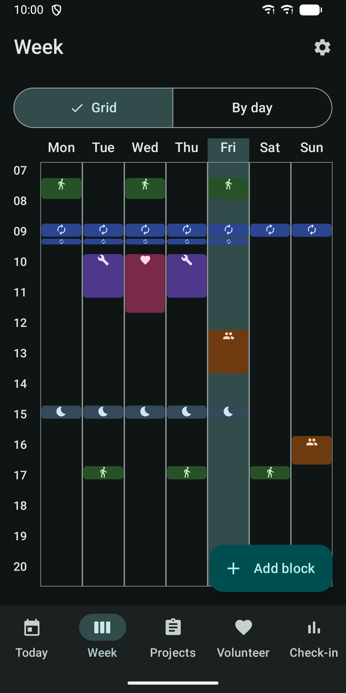

Purpose Planner: Jubilación
Organiza tu semana en la jubilación: rutinas, proyectos y voluntariado.





Acerca de la app
Purpose Planner te ayuda a dar a tu jubilación un ritmo que sea realmente tuyo. Tanto si acabas de jubilarte como si te estás preparando, creas un plan semanal sencillo y no pierdes de vista lo que te importa. QUÉ PUEDES HACER Hoy: consulta el plan del día de un vistazo y marca cada bloque cuando lo termines. Si aún no te has jubilado, verás los días que faltan para tu fecha de jubilación. Si ya estás jubilado, verás en qué día de tu jubilación estás. Semana: crea una plantilla semanal con bloques de tiempo recurrentes. Cada bloque tiene un título, una categoría (Rutina, Social, Ejercicio, Proyecto, Voluntariado o Descanso), días y horas. Puedes ver la semana en cuadrícula o día a día. Proyectos: guarda proyectos de aficiones, aprendizaje y hogar con hitos y un estado: activo, en pausa o terminado. Voluntariado: registra la organización, la fecha, las horas y una nota opcional. Consulta el total de horas del año y por organización. Balance semanal: mira cómo se repartió tu semana entre las categorías, da una puntuación opcional de 1 a 5 según lo con propósito que te pareció la semana y escribe una nota. Los balances anteriores quedan en una lista. Plantilla inicial: empieza con "Los primeros 90 días de jubilación", un ritmo semanal suave con bloques y proyectos de ejemplo. Después puedes cambiarlo todo. Recordatorios: notificaciones opcionales cuando empieza un bloque y el domingo por la tarde para tu balance. Puedes desactivar cada una. Las notificaciones nunca muestran lo que has planificado. Widget: un widget para la pantalla de inicio con el plan de hoy y tu cuenta atrás o el día de tu jubilación. FÁCIL DE LEER Texto grande, alto contraste, botones grandes, temas claro y oscuro según tu teléfono y compatibilidad con lectores de pantalla. Funciona en móviles y tabletas. TUS DATOS SE QUEDAN CONTIGO Sin cuenta, sin servidor, sin anuncios y sin analíticas. La app no tiene permiso de internet. Todo se guarda en tu dispositivo. Puedes exportar una copia de seguridad, protegida con contraseña si quieres, y restaurarla más tarde con el selector de archivos del sistema. DESBLOQUEO PRO El planificador básico está disponible para todos. Una compra única de Pro en Google Play añade: - Exportación a PDF del plan, los balances y el voluntariado - Más widgets: semana, proyectos y horas de voluntariado - Temas de color - Cuatro plantillas iniciales más Pro no es una suscripción. Si ya lo compraste, usa "Restaurar compra" en Ajustes. La app está en inglés. Requiere Android 8.0 o superior. Preguntas o comentarios: apps@schimpf.es